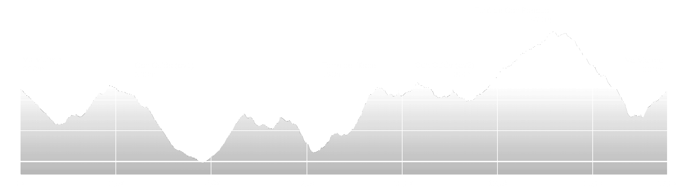

EQUINOX SUN
Pels valents que heu superat la nit i per aquells que voleu posar-vos a prova en un circuit únic, encara us queda el dia.
Veniu a desafiar la llum del sol i deixeu-vos sorprendre pels colors de la serra de Collserola.
Redescobriu la cursa fent el recorregut invers i endinseu-vos en la segona prova de la lliga Equinox Trail.
Gaudiu de les últimes llums de l’estiu.
Fitxa tècnica
- Dia d'inici de la cursa: 21 Setembre 2020
- Horari de sortida: 09:30h
- Zona: Parc natural Serra de Collserola
- Llocs de sortida/arribada: Centre Cívic Vallvidera(Vazquez Montalban)
- Distància real: 17 kms
- Desnivell positiu: 720+
- Material obligatori: Got o bidó (es prescindirà de gots d’un sol ús).
- Material recomanat: Mòbil carregat, paravent, manta tèrmica.
- Bossa de vida (corredor): No
- Número d’avituallaments (en cursa): 2
- Punt quilomètric avituallaments: Av1 Plaça dels Borots, km 3. Av2 Plaça dels Borots, km 12
- Producte d'avituallaments (Av1 i Av2): Aigua, beguda isotònica. Tot sense gluten
- Avituallament meta: Aigua, pepsi, Isotònic, plàtan, taronja, entrepà de butifarra, amb opció vegana.
- Punts seguiment cursa (accés carretera): Plaça dels Borots, Pantà de Vallvidrera
- Categories individuals: Absoluta (Femenina i masculina),
- Temps màxim per finalitzar el recorregut: 4h
- Temps aproximat primer corredor: 1h 25min
- Record de la cursa: 1h 30min
- Temps darrer corredor: 3h 30min
- Talls horaris (control de pas): si (Av2 Can Cuiàs a les 11:40h)
- Hora d’arribada primer corredor: 11:00h
- Hora d’arribada darrer corredor: 13:00h
- Hora d’entrega de premis: 13:30h
- Recorregut senyalitzat amb cinta reflectant d’obra, flextes indicatives, i senyals de perill o precaució